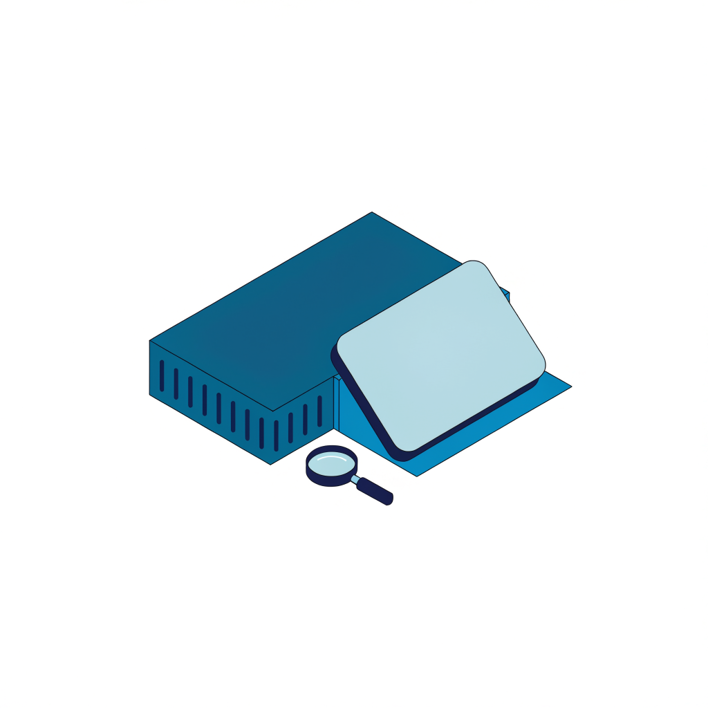

Maquette
États communs
États communs
Catalogue des états communs à toute l’application (maquette).
Écran vide
Historique sans analyse
Aucune analyse pour le moment
Déposez une radiographie panoramique : les analyses terminées apparaîtront ici.
Nouvelle analyseLe rôle lecteur ne peut pas créer d’analyse.
Chargement en squelettes
Tableau et carteErreur de chargement
Confirmation de suppression
Action destructrice : confirmation par saisie, inscrite au journal d’audit.
Accès refusé (403)
Erreur 403
Accès refusé
Votre rôle (Praticien) ne donne pas accès à cette fonction. Si vous pensez qu’il s’agit d’une erreur, contactez l’administrateur de votre cabinet.
Voir en vrai (page d’administration ouverte avec le rôle praticien)
Session expirée
Session expirée
Votre session a expiré après 30 minutes d’inactivité. Reconnectez-vous pour reprendre ; vos relectures enregistrées sont conservées.
Voir l’écran de connexion correspondant durée à confirmer
Notification (toast)
S’affiche en bas à droite et se ferme seule après 6 secondes.